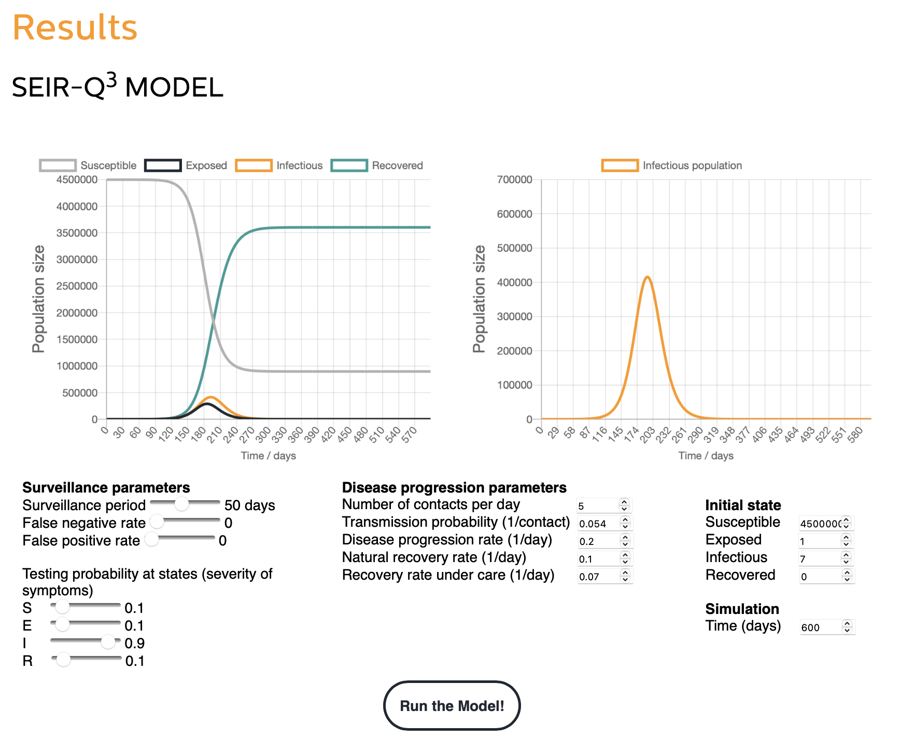

Expanding Our Impact
A potential software subproject is to make a fully functional, user-friendly program that will automate our developed kinetic model and allow the kinetic modelling (or whatever model we eventually use/develop) to have modifiable parameters, available as a publicly available website.
This would involve wetlabs results and experiments (as with modelling - since directly based on it). It would be validated by our wetlab experimental workflow and results.
This program would also inform wetlab results since we can automate the model and quickly make different projections of how parameters would affect the qualities of BC production.
Ideally this will be useful since it makes using a certain modelling mechanism that we pursue in the modelling subproject much easier and automated.
The three ways this software subproject can contribute to the community of synbio and our community goals are:
- Modelling automation will be fully publicly available and usable by other current and future iGEM teams to potentially help them in their project’s modelling
- Could be simplified and slightly modified to be used as an educational tool as well to demonstrate what modelling might look like in synbio
- Could also be slightly modified so grocery stores and food packagers can use it to see what effect different conditions, such as temperature, would have on the BC food packaging.
This idea builds on existing synthetic biology platforms and standards as we would aim to apply techniques used in existing similar platforms.
Some existing platforms that have contributed to this subproject idea and could be applied in its development are:
Leiden iGEM 2020
- Developed a similar idea but for pandemic and infectivity modelling.
- We would want something similar to this idea though, where the parameters are modifiable and the software can apply them to the model and return the results.

Figure 1: The model webpage produced by Leiden.
FLAC 3D
- A modelling platform used for geotechnical modelling of soil, etc.
- Ours would be much smaller scale and for synthetic biology applications (which may require different parameters)
SynBioSS (Synthetic Biology Software Suite)
- Suite of software for the modeling and simulation of synthetic genetic constructs. Uses the registry of standard biological parts, a database of kinetic parameters, and both graphical and command-line interfaces to multiscale simulation algorithms.
- Open access and implemented in python
- Could further investigate this and apply some of the mechanisms they use that are relevant.
References:
- Hill AD, Tomshine JR, Weeding EM, Sotiropoulos V, Kaznessis YN. SynBioSS: The Synthetic Biology Modeling Suite. Bioinformatics. 2008;24(21):2551–3.
- Software products [Internet]. FLAC3D Constitutive Models | US Minneapolis - Itasca Consulting Group, Inc. [cited 2022Apr13]. Available from: https://www.itascacg.com/software/flac3d-constitutive-models
- Team:leiden/model. [cited 2022Apr13]. Available from: https://2020.igem.org/Team:Leiden/Model